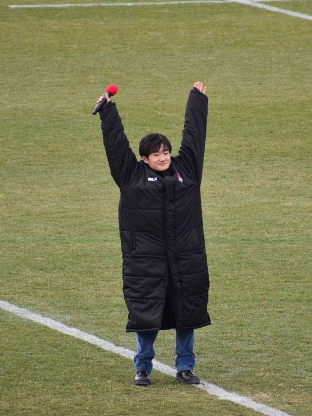

Yuki Tsunoda

- Team: Visa Cash App RB
- Land: Japan
- Geburtsort: Sagamihara, Japan
- Geburtsdatum: 11.05.2000
- Alter: 24
- Podien: 0
- Grands Prix gefahren: 87
- Weltmeisterschaften: 0
- Team: Visa Cash App RB
- Fahrernummer: 22
In der gesamten Geschichte der Formel 1 hat noch nie ein japanischer Fahrer einen Großen Preis der Weltmeisterschaft gewonnen. Könnte Yuki Tsunoda der Erste sein? Red Bull ist der Meinung, dass der Youngster auf dem besten Weg ist, in die A-Mannschaft aufzusteigen, wenn er weiterhin so beeindruckt, wie er es in den letzten Jahren getan hat. Tsunodas Aufstieg in die Königsklasse des Motorsports verlief erstaunlich schnell: In etwas mehr als drei Jahren stieg er von der japanischen Formel 4 in die Formel 1 bei AlphaTauri (heute RB) auf, nachdem er 2019 ohne Kenntnisse der Strecken nach Europa gekommen war. Aber nach einem langsamen Start in der Formel 3, gefolgt von einer äußerst beeindruckenden Debütsaison in der F2, in der er den dritten Platz in der Meisterschaft belegte und auf dem Weg dorthin drei Siege einfuhr, bewies Tsunoda, dass er den Speed und das Rennhandwerk hatte, um sich in die F1-Startaufstellung vorzukämpfen. Er hat sich vielleicht nicht ganz so schnell an den Grand-Prix-Sport gewöhnt wie an die Formel 2, aber nachdem er sich nun fest in der Formel 1 etabliert hat, könnte er sich in einem Red Bull an vorderster Front wiederfinden.
